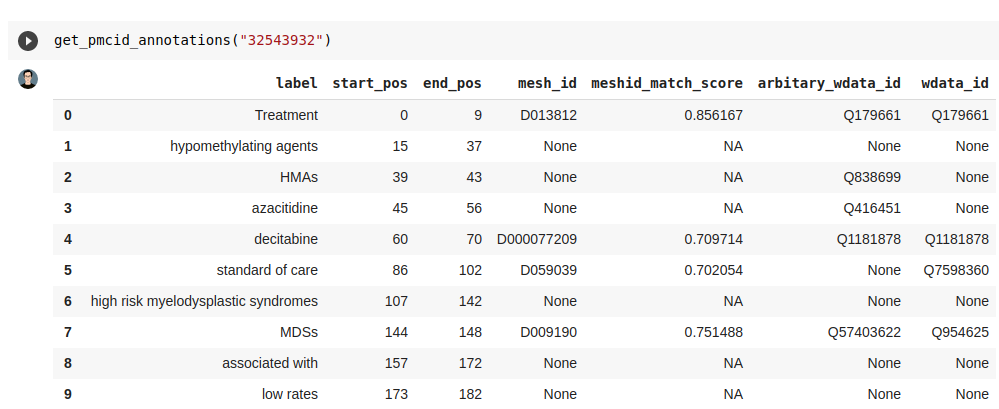
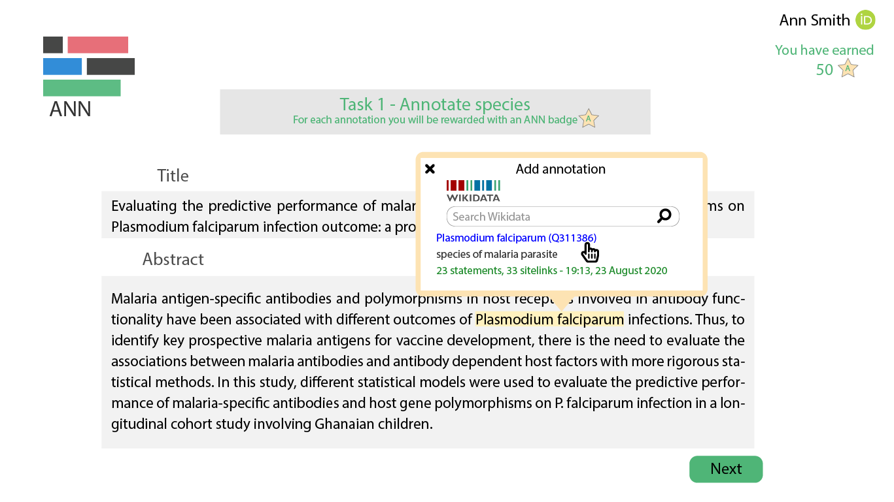
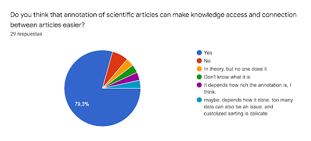
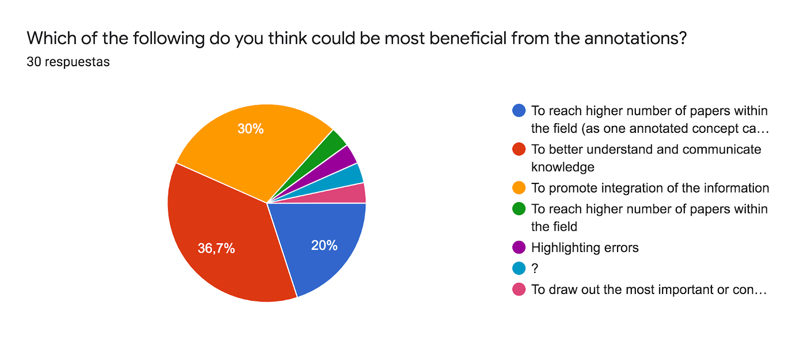
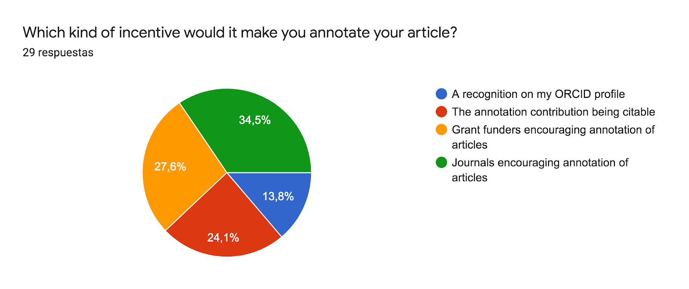
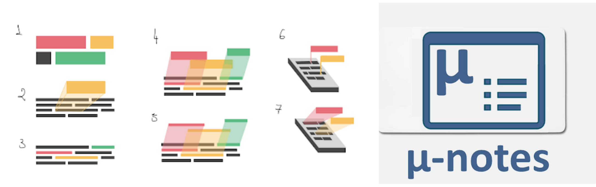
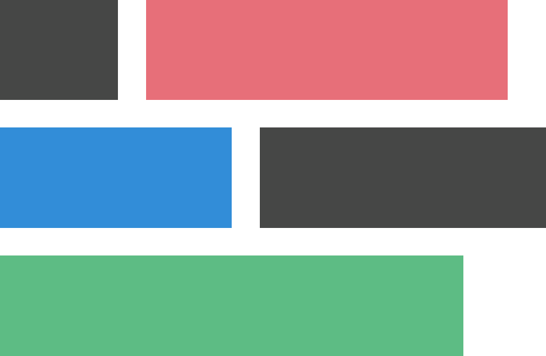

Bruno Andrade Paranhos 0000-0002-6730-6608
· paranhosba
· labdrafts
Cellular and Molecular Cardiology Laboratory, Biophysics Institute, Federal University of Rio de Janeiro, Brazil
Dayane Araújo 0000-0003-2211-0107
· DayaneRAraujo
· Dada_bio
European Molecular Biology Laboratory - European Bioinformatics Institute (EMBL-EBI), Wellcome Genome Campus, Hinxton, Cambridgeshire, CB10 1SD, UK
Ana Dorrego-Rivas 0000-0002-0462-2988
· anadorrego
· adorrego_r
Planar Polarity and Plasticity lab, University of Bordeaux, INSERM, Neurocentre Magendie, U1215, F-3300 Bordeaux, France
Delwen Franzen 0000-0001-9974-9115
· youraccount
· DelwenFranzen
QUEST Center for Transforming Biomedical Research, Berlin Institute of Health (BIH), Berlin, Germany, Charite ́- Universitätsmedizin Berlin, Berlin, Germany
Most scientific findings are communicated via scientific papers. In these papers knowledge is encoded in language, which makes it difficult for computers to search for facts. Additionally, millions of articles are produced every year, which makes it virtually impossible to keep track of current biomedical knowledge without the aid of computational tools.
Annotation - linking words in scientific texts with external identifiers - is a ground step to automatically process biomedical knowledge. The annotation of biomedical articles is part of the work of biocurators, professionals dedicated to parse and make knowledge available on databases. These annotations, usually based on ontologies (sets of organized concepts) already power core platforms used by the research community, such as ZFIN[1] and UniProt[2]. (Note that the meaning of “annotation” used here is different from sharing written notes about ideas on the text such as proposed by hypothes.is).
Even though biomedical databases are extremely valuable, they are limited to specific subsets of human knowledge. It would be a colossal challenge to annotate text if we needed to look for the right ontology for each kind of concept.
Wikidata is a possible solution for this challenge. It is knowledge base that contains more than 80 million varied concepts: “p53”, “malaria”, “Douglas Adams”, “Brazil” and much more. Moreover, anyone can contribute with new concepts (and relations between them) to Wikidata, which makes it flexible enough to accommodate the vast amount of concepts used in research articles.
During the 2-day hackathon eLife Sprint 2020, we started a project for annotating concepts in scientific articles to Wikidata, envisioning integration with Europe PMC’s Annotation API. We brainstormed both technical and practical aspects of developing a tool to gather crowd-annotations of scientific concepts. Inspired by other scientific games (like Mark2Cure, eterna and fold.it), we designed a gamified interface for crowdsourcing scientific annotations. Additionally, we studied Natural Language Processing approaches for extracting scientific entities, and assembled a series of perspectives on how to implement such an annotation tool in the current research environment.
This document contains reports on the different branches of the project, coupled to thoughts of the participants on how to achieve the overarching goal of annotating all scientific text.
Given the short time for the event, some parts of the report are not completely structured. Nevertheless, we believe that they can be useful for accessing the development of the project.
Community biocuration projects
We note that this is not the first shot at organizing biomedical information by harnessing the power of the crowd. Some notable examples:
PomBase (a base of information related to Schizosaccharomyces pombe) has a wonderful system for annotation articles to a set of OBO ontologies: https://github.com/pombase/canto [3]
UniProt has a community curation branch, which is under active development(see here)
Mark2Cure was a project with goals really similar to the ANN project (GitHub page[4][5])
Cochrane has a crowd-annotation platform targeted at clinical trials: Cochrane Crowd
“ANN” can be useful for these (and similar) projects, by providing coarse, community annotations for the dedicated, expert curator teams of bases such as UniProt and PomBase.
Tasks
At the hackathon we worked on the following tasks:
Deploy a pilot survey of the researchers’ views on annotating of scientific texts
Develop code for selecting candidate concepts for annotations (using the NLP package scispacy)
Review works related to annotation of texts and how they relate to the project.
Analyse the incentive structure and how to engage researchers in the annotation of scientific texts
Manually annotate a sample of biomedical publications to Wikidata IDs and compare them to currently annotated pieces of text on Europe PMC
Extract patterns related to the availability of annotated concepts in Wikidata.
Design a logo and a name for the project
Design an user interface and prepare a mockup “front-end”.
Why is annotation important?
Two main contributions of annotations are to clarify the meaning of texts and enable programmatically processing.
Clarify scientific prose
Disambiguation of concepts and abbreviations: Words can have different meanings in different contexts. With annotations, selected words in a scientific article or abstract are linked to a concept in a knowledge base (e.g. Wikidata) and can be clearly disambiguated. Ultimately, this helps readers better understand the content of scientific articles.
Science communication: through an enriched layer, annotations help convey complex information to the general public. It is possible to implement a “hover” function (similar to that in Wikipedia), where the user could hover above a word and you see the definition of a concept.
Programmatically process articles
Semantic enrichment: annotations enrich a scientific article with an additional layer of machine-readable information, providing more in-depth information about a concept or linking it to other sources of information.
The semantic enrichment layer unleashes the biomedical knowledge constrained in biomedical articles to the world of the semantic web. The connections of concepts, then, can impact a number of different aspects of research:
Programmatically process articles
Semantic enrichment: annotations enrich a scientific article with an additional layer of machine-readable information, providing more in-depth information about a concept or linking it to other sources of information.
The semantic enrichment layer unleashes the biomedical knowledge constrained in biomedical articles to the world of the semantic web. The connections of concepts, then, can impact a number of different aspects of research:
Integration of different sources of information: annotations can help us find information related to any given concept, regardless of its source. From the perspective of the researcher, this can improve the visibility of their work, making it reachable for the ones interested in the area.
Improvement of document classification: annotation can help automated document classification, making it easier to search these documents.
Search for complex questions: Text annotated with Wikidata IDs (semantically enriched) are readable by computers. This enables better discovery mechanisms (and not just left as words). Moreover, Wikidata is a knowledge graph, and concepts are linked to each other. That makes if possible to leverage the collective knowledge embedded in the graph to make powerful queries, such as: “Which articles produced by alumni of my university mention drugs that block NMDA receptors?” , “Which cell lines are used for research that deals with respiratory viruses”?.
Improve openness of research: annotations in a paper that link to an open knowledge base increase the openness of an article in accordance to the FAIR principles of Findability, Accessibility, Interoperability and Reusability. Our work focus on annotations compatible with the EuropePMC API (which uses the W3C standard and encodes annotations in a RDF-compatible format), therefore making annotations quickly available via the API itself and wrappers, such as the R package europe PMC.
Related softwares for annotation
The task of connecting mentions in scientific texts to identifiers in databases has been researched in both the biomedical and the natural language processing communities. There have been many approaches to automate this task. This is different from our human-in-the-loop approach. Nevertheless different components can help us to select candidates that we present to the annotators.
Of note, there have also been previous approaches for annotating documents using Wikipedia [6]
Overview
Open Tapioca
Recognizes entities and links them to Wikidata, but only for person, location organization
Could be retrained with a subset of Wikidata that would contain only biomedical entities
Sci Spacy
Entity detection and linking to UMLS ID
Linked WikiText-2 Project
Does Entity identification, Annotation with Wikidata entries.
The project utilizes Stanford CoreNLP
Doccano
Does Entity identification, Sentiment analysis.
BERN
Uses contextualized word embeddings, which might have higher accuracy than sci Spacy
Input is a sentence. Output is the sentence, with all persons, locations and organizations linked to their respective Wikidata identifier. The system is trained solely on Wikidata. The authors use occurrence statistics of concepts in Wikidata and in text to compute the likelihood of a certain word in the text linking to a certain Wikidata item (e.g. “Barack Obama” linking to “Q76”). To take context into account independently computed local features are propagated along a Markov chain. The authors claim that this system is lightweight and easy to retrain, and therefore easily adapts to the frequent changes of Wikidata. They say that restricting their system to only people, organizations and locations enabled them to do well without using any other data but Wikidata, while other approaches do rely on additional text from Wikipedia.
How feasible is this system for our project
Using only Wikidata to train the system is a good asset, because this might keep training times low. The authors are right in claiming that their system is lightweight: It does not use word embeddings or extensive language models but derives the necessary information about word similarities from Wikidata itself. The author states that this approach worked for relatively common entities, so it is unclear whether we can adapt it to less common biological entities. Testing the system on the cited website gave reasonably good results for less common names of people and cities, but was prone to misinterpret words that were not people, organization or locations as such (e.g. in the sentence “Banks are often closed.” the words “Banks” and “closed” were linked to locations). The documentation seems generally very good.
Questions/Answers:
How does the system pick out only people, locations and organizations? This is done before training, by using only entities of those categories in the training data set. (see documentation here)
How easily can this be changed in the code? If we had a dump of Wikidata containing only biological entities we could use it to train on as described, no changes to the code itself needed!
The input is a sentence. The output is a sentence with the biomedical entities in that sentence annotated with canonical names, concept IDs and TUI(s).
How feasible is this system for our project:
This looks nearly perfect for candidate generation.
Questions:
Are the IDs provided there in any way meaningful for linking them to Wikidata? Yes! (See section below)
Uses contextualized word embeddings, which might have higher accuracy than sci Spacy
Does Entity Identification, Entity typing
Applicability of the scispacy tool
The input for the software backend are abstracts of scientific articles that are loaded from Europe PMC using the Europe PMC API. We then use sci Spacy to detect entities in the abstract. Sci Spacy annotates those entities with their ID in the Unified Medical Language System (UMLS) [9].
Notably, 26 thousand items in Wikidata have an UMLS ID, which allows to link the items that were detected by sciSpacy to be connected to Wikidata. We pinpoint a couple challenges:
The pre-trained scispacy models are unable to identify the entity if it has conjunctions and prepositions in it. To improve the entity detection performance the model needs to be retrained using manually curated scientific word lists.
Sci spacy does not use contextualized word embeddings, which impacts the precision of retrieved entities (the model employed in sci Spacy is derived from this reference[10]).
Other approaches use contextualized word embeddings for detecting and normalizing biomedical entities (such as https://bern.korea.ac.kr/). They could be used in the project in addition to scispacy.
Besides UMLS IDs, sciSpacy also can match concepts a number of MeSH IDs, which can also be linked to Wikidata items.
We wrote code in a Google Colab notebook to concatenate the Europe PMC API with sciSpacy and Wikidata. After retrieving the abstract of an article via its PMID, the function extracts relevant concepts via sciSpacy and match the ones with PMIDs to Wikidata.
The output of the pipeline is depicted in the Figure 1 and the code is available in the project github repository.
Figure 1: Concatenation of the Europe PMC API to Wikidata and sciSpacy
Software Frontend
A mockup of the frontend is available in Figure 1 and the rules used for the user interface design are shown in Figure 2. The main idea is to make annotations made with ANN fun for annotators. Users will be able to search for a publication by PMID or title. ANN boxes will be filled in with title and abstract. Annotations will work in a task manner where annotators will be asked to annotate a type of entity or sentence and be rewarded with ANN badge points.
When selecting a text for annotation, a window will popup and users will be able to select terms from Wikidata. The annotations will be saved in a format that is compatible with Europe PMC annotations submission system, which would add Wikidata annotations to the Europe PMC SciLite annotations features. Users would be able to login with an ORCID account and ANN would allow them to claim their annotations work to their ORCID account.
Figure 1: Mockup prototype of the frontend of ANN
Figure 2:Miro board for brainstorming of the functionalities of the user interface.
Manual annotations: case report
We manually annotated a sample of biomedical publications (some of which from eLife) to extract information from their abstracts as a prototype for the platform. These annotations were made mostly by people from a research-lab background, which were presented to Wikidata during this project. In that sense, they mimic what a researcher could annotate when using the ANN platform.
“Ankyrin G” was not found on Wikidata, but only “ankyrin”. The ankirin item on Wikidata refers to a protein family, and not to the protein itself. Later, we noticed that “Ankyrin G” was actually present on Wikidata (here or here), but at the moment the exact term “Ankyrin G” was not listed as one alias.
A1 - Concepts might be present on Wikidata, but not with the exact wording they appear in scientific texts.
A2 - The abstract of the text does not mention if the study is dealing with humans or mouse cells! Digging into the text, it mentions that “Dissociated hippocampal neurons were prepared from embryonic E18 rats.” The actual annotation would be this, but this was impossible to tell given the abstract! Annotation would solve this, and the authors would be the best to disambiguate.
Given A3, There are some things that should always be annotated, such as the species. Which kind of things should be always annotated? How should they be required? Things such as the species of the organisms used in the study, and the techniques used to assess the question. Maybe if journals require a semantic abstract, a structured abstract with semantically enriched knowledge, some of this problems would be bypassed.
The concept of “hippocampal neurons” was not identified separately on Wikidata, just the concepts for “hippocampus” and “neuron”. Notably, even these two concepts are represented in an species-independent way. The ideal annotations would be precise for the taxon of interest.
A3 - Compound concepts might be split on Wikidata on its building parts. However, as per the view of the annotator, “hippocampal neuron” can be understood as an individual concept. This illustrates an open challenge of annotation: do we annotate the parts, or do we annotate the complete concept?
AIS, the acronym for “Axon Initial Segment” did not have a string-match on Wikidata. Notably, the concept is present on Wikidata , but not the wording of the acronym, making this an instance of the problem A1 (lack of exact name).
A4 - The AIS acronym is present on Wikidata but for many different things (like the Australian Institute of Sport and in situ pulmonary adenocarcinoma). Acronyms are tricky, and might need disambiguation before matching to the database. Some NLP programs like spacy have acronym disambiguation modules.
Adding a concept to Wikidata in the perspective of a new user
Adding a concept to Wikidata in the perspective of a new user
The concept of “hippocampal neurons” was created on Wikidata by a new editor. However, the creation of an item in an ontology is a challenging task. The terms used are not common for the biological research workflow. These are the perceptions of one of the team members, when creating an Wikidata item for the first time:
_
LABEL: main annotation for the concept. This is what would be used from SpaCY,
DESCRIPTION: what the annotation refers to. As simple as possible. Simple words, it can reference other concepts.
ALSO KNOWN AS/ alias : other concepts that mean the same thing (I wonder whether this could be “counted” as one, if referencing throughout an abstract). For example, when writing an abstract you use “different words” for the same thing to avoid repetition, would this be understood as one same concept if they are linked ?
(in multiple languages): All this can be done in multiple languages:
When adding statements:
you can specify if the concept is a subcategory of a different concept: SUBCLASS OF
you can specify if the concept is an example of a different concept: INSTANCE OF
You can also specify if the concept is PART OF: I take this to be as part of a bigger system, not necessarily immediate subclass. But this can be tricky to distinguish I think.
You can add an IMAGE to better describe it."_
This is the first report (as of our knowledge) of a biology researcher perspective when faced with the task of adding a new item to Wikidata.
Given the complexity of ontological modelling, the report shows that the task is feasible. Adding a concept without training in semantic technology makes Wikidata a powerful tool, as the barrier of contribution is much lower than the one for current ontologies. The entries can be, then, adjusted later by the community, if necessary.
This article is related to drosophila research. Drosophila genes have frequently funny names, which might be mistaken for other entities. For the gene frizzled, the system worked nicely. We could find the Wikidata entry by typing “frizzled” but the official name is “fz”. The protein is also present, and the researchers would have to choose if they are talking about the gene or its product.
The Van Gogh protein, on the other hand, does not show up on Wikidata, just the dutch post-impressionist painter. For this case, the protein is not on Wikidata, but the protein-coding gene is, but it gets “buried” amidst the references to the painter.
B1 - Many entities may have the same name, even when dealing with full words (and not acronyms). This ambiguity cannot be solved by looking at the word, and it might be solvable (at least partially) by looking at the context.
B2 - A biologically similar entity might be present, but in a slightly different way (for example, gene entry when talking about a protein). This is a more general case of problem A2, of disambiguation of gene names for different species.
For this article, PCP (planar cell polarity) was not found on Wikidata, just other references for the same acronym (instance of case A4). In this case, even searching for the full concept does not lead to a hit.
C1- The concept of interest may be completely missing.
Of note, many scientific articles catalogued on Wikidata mention “planar cell polarity” in their titles, which might be confusing for annotation. This is a good indication that it would be useful to create the concept on Wikidata, at the very least to link to the article items via the main subject property.
C2 - The concept itself is not present, but there are scientific articles with the concept in the title.
For N-cadherin, the label on wikidata was “cadherin 2”, but “N-cadherin was listed as an alias. This is not a problem, but it seems to be a possible source of confusion, so it is worth mentioning it.
C3 - The main label on Wikidata is not the one used on the article, but the name used by the article is present as an alias.
Conclusion of manual annotations
The case study of manual annotations is useful to find patterns of problems in database matching. Notably, we had time only to analyse 3 of the many manual annotations made during the eLifeSprint 2020. In that way, the spreadsheet of manual annotations represent a rich resource for further exploration of the details related to annotation of biological concepts to Wikidata.
Community Engagement
How can we motivate researchers to annotate content?
Award a stamp/reward/badge for annotations: here, it is important to acknowledge the challenge that incentivising a behaviour is difficult if it is not yet rewarded more systematically within the research ecosystem (e.g. for example via grants). Assigning a DOI or a badge
Start small: annotate smaller components of the research article such as the title or the abstract
Gamification: make it fun! See an example from a previous eLife Sprint, appstract.
Embed annotations in the publishing process: make use of existing “check points” in the publishing system to encourage researchers to annotate their research articles/abstracts (e.g. publishers could ask researchers to annotate their abstract when they submit their paper, similar to assigning keywords). We reached out to members of the eLife community for feedback on this
Citable annotations?
We discussed further the idea of how to acknowledge the work of curators in a specific channel of the hackathon called “product clinic”, created to help projects to identify core value propositions, audience, user stories and more. Here is a partial summarized transcript of the thread we had to discuss citable annotations. Note: the conversations were adapted by T.L. for clarity and anonymity, in good faith to preserve the conversation, but respecting the privacy of people involved:
Team member A:
At #team-annotate we are working on possible incentives for researchers to annotate their articles. One of the options we discussed is the possibility of giving an identifier (like. a DOI) to these kind of contributions and even make them citable. Do you know if it is possible to do so for this kind of work/contribution?
eLife Sprint staff A:
I don’t believe there are any restrictions that would prevent using a DOI. According to the DOI.org faq, a DOI can be assigned to “any entity — physical, digital or abstract — that you wish to identify, primarily for sharing with an interested user community or managing as intellectual property.”
A DOI in and of itself is not generally perceived as such unless linked to a higher level incentive such as, say, recognition of the content the DOI represents for the purposes of funding or career progression
Team member A:
After discussing it with the team members, we thought that maybe a badge/stamp system instead would be bette -it may also be more “visual” than a DOI. But it’s good to know we can consider DOIs too.
eLife Sprint staff B:
If annotations, as a web standard, already have URIs, would mean that adding a DOI is duplicative. Nevertheless, DOIs are only really valuable as scholarly currency if some funder or tenure committee recognizes the thing the DOI is attached to. Badges seem like a good way to go.
This seems like a good resource: Annotation Is Now a Web Standard
eLife Sprint staff A:
For what it’s worth, eLife funded much of the work that went into Hypothes.is becoming a publisher-friendly option for scholarly annotation (eLife enhances open annotation with Hypothesis to promote scientific discussion online).
As to whether that makes Hypothesis itself an actual web standard, that’s up to the definition of what a web standard is. I think it’s fair to say that it is a solution based on principles and practices that have been approved by the W3C consortium.
Once the technical barriers to annotation on academic content were overcome however, there remain other issues that impact the usage of open annotations on academic research. They range from the lack of incentives, to reticence by researchers to publicly critique a peer’s (especially a senior peer’s) work, to fear of controversy.
Public annotations pertaining to academic papers therefore remain, at least in our experience, sadly underused.
eLife Sprint staff B:
The w3c has recognized the Recommendations of the Annotation Working Group. Their architecture model leads me to believe that the goal is that annotations will be anchored to URIs.
-eLife Sprint staff A:
You can already use the share icon on any hypothesis annotation to share it via a unique URI: https://hyp.is/-cFm4AajEeiHGMe1j9pq5g/elifesciences.org/for-the-press/81d42f7d/elife-enhances-open-annotation-with-hypothesis-to-promote-scientific-discussion-online
eLife Sprint staff A:
First thing that came to mind regarding abstract keywords is reviewer/editor matching, Daniel Ecer is the brain behind eLife’s PeerScout project, which focuses on abstract keyword extraction to help make reviewer/editor matching easier (see this this talk)
So, it is perhaps in publishers’ favour to get researchers to annotate their abstracts, but what does researchers gain from annotating correctly? Moreover, what is correctly?
Ultimately the reviewer/editor has the power to decide whether or not to review, so whatever they think is correct, is currently considered “correct”. In a future where we open up peer review to all researchers, it would be beneficial to annotate your abstracts to get the appropriate reviewers to review your paper.
Also pointing out another open-source effort to annotate figures - the SmartFigures Lab, a part of the EMBO initiative SourceData [14]
What are the views from the research community?
We created a survey to get the views from the research community towards the possible implementation of an annotation system. All statements refer to the respondents of the survey:
The majority of respondents are researchers
PubMed and Google Scholar are the most used tools for searching scientific articles
Most of the respondents do not know about Wikidata or they are unsure of what it is
Annotation is still a not so familiar concept in the community.
The majority of respondents think that an annotation system would boost the connection between scientific articles (fig. 1)
Getting a better understanding and communication of scientific knowledge is perceived as an important benefit from an annotation system (fig. 2)
The majority of respondents would annotate their articles if this practice was encouraged by funders and/or journals (fig. 3)
Most of the participants would encourage, or at least mentioning, the annotation of articles to authors if they were an editor from a journal
Figure 1: Pie chart extracted from the survey related to the question Do you think that annotation of scientific articles can make knowledge access and connection between articles easier? n=29 answers
Figure 2: Pie chart extracted from the survey related to the question Which of the following do you think could be most beneficial from the annotations? n=30 answers
Figure 3: Pie chart extracted from the survey related to the question Which kind of incentive would make you annotate your article? n=29 answers
Preparing a logo and a name
During the 2020 eLife Sprint, several names for the project were brainstormed and “ANN” (short for annotate) was chosen after a pool made public to all participants of the event.
Some logo options were prepared by two contributors and chosen after a team decision. All logos tried to bring a text highlight to convey the idea of hyperlink/annotation (Figure 1). The chosen logo (Figure 2) was then adapted in terms of size and colors, adopting a faded red, blue, and green color scheme - colors often used in the logos of both Wikidata and eLife. The other logo options were not completely discarded, and may contribute to the project visual identity in the future.
Figure 1: The initial drafts for the logo
Figure 2: The final version of the logo
Final Remarks
This report is a documentation of our collective efforts to prepare the ANN project at eLifeSprint 2020. We hope that the efforts we collectively made during the sprint will allow the project to start its journey until becoming a reality.
The project is going to be continuously improved at github.com/lubianat/ann, where future tasks have been organized as issues. Everyone is welcome to join us and help empowering open biomedical knowledge with collaborative semantic enrichment.
Acknowledgements
This world would not have been possible without the effort of the eLife Innovation team and the organizers of the eLife Innovation Sprint 2020, specially Emmy Tsang. All the participants of the eLife Sprint contributed to this as a community. We would like to thank Giulliano Maciocci, Micah Vandegrift and Dasapta Irawan for the discussion and insights. We would also like to thank João Vitor Cavalcante, which contributed with code to the repository, solving issues raised at the Sprint.
Individual contributions
All contributors participated in the discussions about the platform design, the directions of the project and on the draft of this manuscript.
Additionally:
I.H.G.P , A.D.R, D.F, T.L, G.N.V and D.A. contributed to the manual annotation of scientific articles.
S.W. and A.G worked on the analysis of Natural Language Processing software and on the integration of sci spaCy to Wikidata.
D.A. made connections with Europe PMC and designed the frond-end mockup.
A.D.R. organized the survey of the researchers’ views
G.N.V , D.F and A.D.R. discussed and wrote the community aspects on benefits of annotation and research incentives.
B.A.P designed the logo, and I.H.G.P contributed with drafts too.
T.L, D.F, I.H.G.P worked on extracting patterns from manual annotations
T.L proposed the initial idea, and oversaw the project.
References
1. The Zebrafish Information Network: new support for non-coding genes, richer Gene Ontology annotations and the Alliance of Genome Resources
Leyla Ruzicka, Douglas G Howe, Sridhar Ramachandran, Sabrina Toro, Ceri E Van Slyke, Yvonne M Bradford, Anne Eagle, David Fashena, Ken Frazer, Patrick Kalita, … Monte Westerfield Nucleic Acids Research (2019-01-08) https://doi.org/ghbvc6
DOI: 10.1093/nar/gky1090 · PMID: 30407545 · PMCID: PMC6323962
3. Community curation in PomBase: enabling fission yeast experts to provide detailed, standardized, sharable annotation from research publications
Antonia Lock, Midori A Harris, Kim Rutherford, Jacqueline Hayles, Valerie Wood Database (2020) https://doi.org/ghbhx8
DOI: 10.1093/database/baaa028 · PMID: 32353878 · PMCID: PMC7192550
4. Applying Citizen Science to Gene, Drug, and Disease Relationship Extraction from Biomedical Abstracts
Ginger Tsueng, Max Nanis, Jennifer T Fouquier, Michael Mayers, Benjamin M Good, Andrew I Su Bioinformatics (2019-09-03) https://doi.org/ghbhx7
DOI: 10.1093/bioinformatics/btz678 · PMID: 31504205
5. Citizen Science for Mining the Biomedical Literature
Ginger Tsueng, Steven M. Nanis, Jennifer Fouquier, Benjamin M. Good, Andrew I. Su Citizen Science: Theory and Practice (2016-12-31) https://doi.org/ghbvc7
DOI: 10.5334/cstp.56 · PMID: 30416754 · PMCID: PMC6226017
6. Annotating Documents by Wikipedia Concepts
Peter Schönhofen Institute of Electrical and Electronics Engineers (IEEE) (2008-12) https://doi.org/bqfkzk
DOI: 10.1109/wiiat.2008.56
8. ScispaCy: Fast and Robust Models for Biomedical Natural Language Processing
Mark Neumann, Daniel King, Iz Beltagy, Waleed Ammar Association for Computational Linguistics (ACL) (2019) https://doi.org/ggjgn5
DOI: 10.18653/v1/w19-5034
10. Neural Architectures for Named Entity Recognition
Guillaume Lample, Miguel Ballesteros, Sandeep Subramanian, Kazuya Kawakami, Chris Dyer Association for Computational Linguistics (ACL) (2016) https://doi.org/gf2k56
DOI: 10.18653/v1/n16-1030
13. Vangl2 acts at the interface between actin and N-cadherin to modulate mammalian neuronal outgrowth.
Steve Dos-Santos Carvalho, Maite M Moreau, Yeri Esther Hien, Mikael Garcia, Nathalie Aubailly, Deborah J Henderson, Vincent Studer, Nathalie Sans, Olivier Thoumine, Mireille Montcouquiol eLife (2020-01-07) https://www.ncbi.nlm.nih.gov/pubmed/31909712
DOI: 10.7554/elife.51822 · PMID: 31909712 · PMCID: PMC6946565
14. SourceData: a semantic platform for curating and searching figures
Robin Liechti, Nancy George, Lou Götz, Sara El-Gebali, Anastasia Chasapi, Isaac Crespo, Ioannis Xenarios, Thomas Lemberger Nature Methods (2017-11-01) https://doi.org/gd6gqq
DOI: 10.1038/nmeth.4471 · PMID: 29088127
 0000-0003-2473-2313
·
0000-0003-2473-2313
·  lubianat
·
lubianat
·  lubianat
lubianat